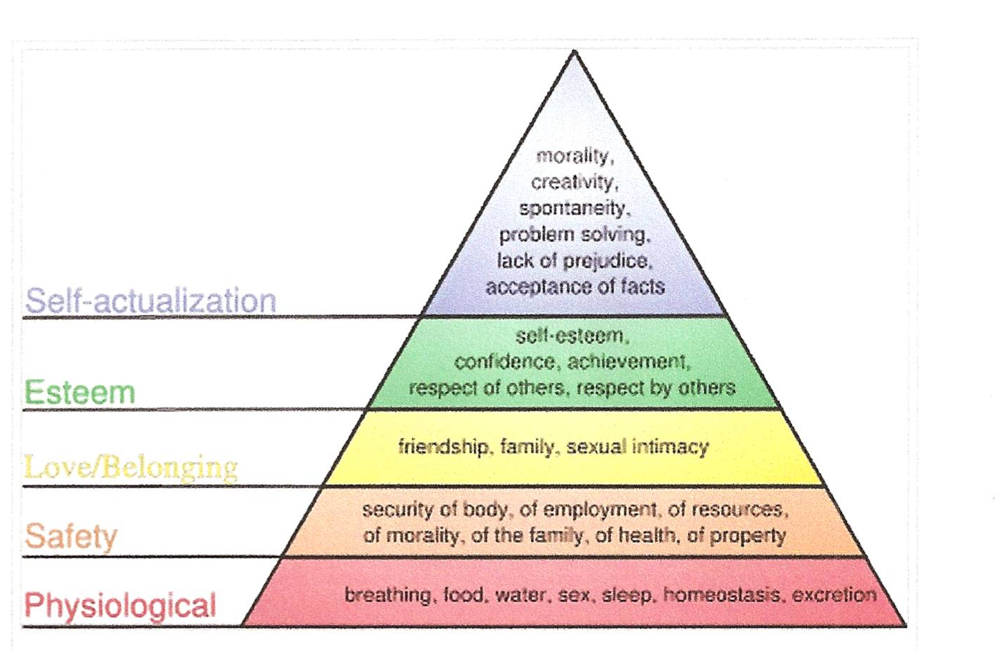

Simplified outline establishing foundational concepts for "Learning for Life" module. Addresses the urge to learn as driven by basic needs (Maslow reference). Presents six life roles using Oregon educational model: Individual, Family Member, Citizen, Learner, Consumer, and Producer. Structured as a brief reference document, likely a simplified version or outline version of the fuller commentary.
- **Key People**: Maslow (theoretical reference)
- **Key Organizations**: Oregon educational system (framework source)
- **Tags**: EDUCATION, PROFESSIONAL
- **Eulogy Relevance**: MEDIUM - Reflects Don's interest in comprehensive life frameworks and understanding human development across multiple dimensions.
A-1
LEARNING
FOR LIFE
The
urge to learn
1
Basic needs – Maslow

Life
roles - Oregon
Individual
Family
Member
Citizen
Learner
Consumer
Producer
Download Original